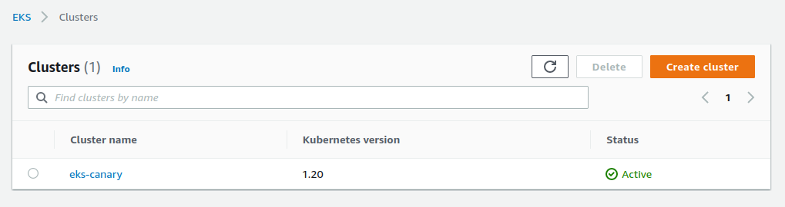
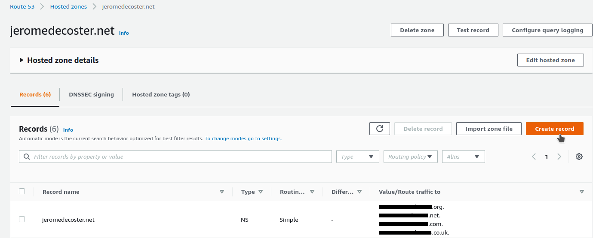
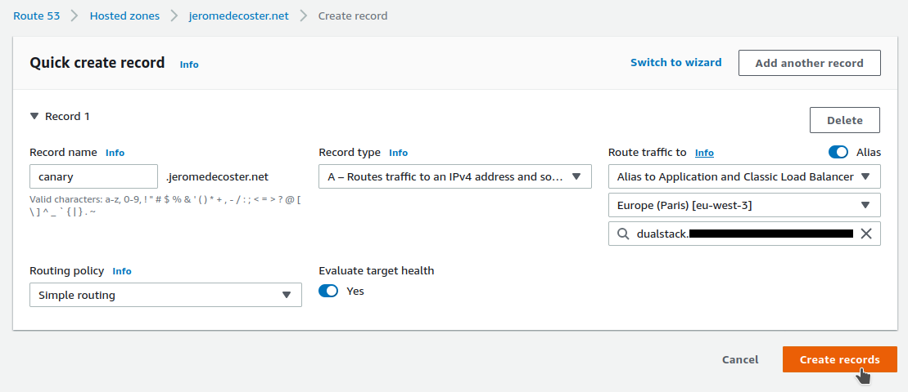
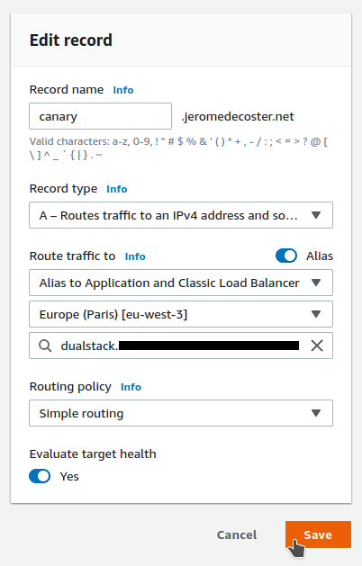

Kubernetes + EKS + Canary Deployment
- Use Terraform to create the EKS cluster
- Publish
version 1.0.0toversion 1.1.0using the Canary Deployment pattern - First by simply using replica scaling
- Then using nginx ingress

Install and setup the project
Get the code from this github repository :
# download the code
$ git clone \
--depth 1 \
https://github.com/jeromedecoster/eks-canary.git \
/tmp/aws
# cd
$ cd /tmp/aws
To setup the project, run the following command :
# npm install + terraform init
$ make setup
This command will :
- Install the npm packages of the test.
- Setup the Terraform infrastructure.
Now let’s create our EKS cluster :
# terraform validate
$ make tf-validate
# terraform plan + terraform apply
$ make tf-apply
The cluster is now ready :

Let’s configure kubectl :
# setup kubectl config
$ make kube-config
# test the configuration
$ kubectl config current-context
arn:aws:eks:eu-west-3:xxxxx:cluster/eks-canary
Publish the version 1.0.0
To upload our first version we run this command :
# publish the 1.0.0 version
$ make k8s-simple-1.0.0
This command runs this script :
$ kubectl apply --filename namespace.yaml
$ kubectl apply --filename deployment-1-0-0.yaml
$ kubectl apply --filename load-balancer-1.yaml
- Creation of the
canary-simplenamespace - Deployment of 2 replicas of http-echo
- Creation of a Load balancer
http-echo is a simple but useful tool to simply display text content through an HTTP server.
# let's do a little test ...
$ docker pull hashicorp/http-echo
$ docker run -p 5000:5678 \
hashicorp/http-echo \
-text="Hello..."
# in another terminal window ...
$ curl localhost:5000
Hello...
And the message we display will simply be version 1-0-0 :
spec:
containers:
- name: http-echo
image: hashicorp/http-echo
args:
- "-text=version 1-0-0"
Let’s look at the various elements created under the canary-simple namespace :
$ kubectl get all -n canary-simple
NAME READY STATUS RESTARTS AGE
pod/hello-1-0-0-54656f66db-7lkkb 1/1 Running 0 70s
pod/hello-1-0-0-54656f66db-p2qcw 1/1 Running 0 70s
NAME TYPE CLUSTER-IP EXTERNAL-IP PORT(S) AGE
service/hello-lb LoadBalancer 172.20.63.87 ac10xxxxx.eu-west-3.elb.amazonaws.com 80:31343/TCP 70s
NAME READY UP-TO-DATE AVAILABLE AGE
deployment.apps/hello-1-0-0 2/2 2 2 70s
NAME DESIRED CURRENT READY AGE
replicaset.apps/hello-1-0-0-54656f66db 2 2 2 70s
Subdomain management with Route 53
I create a new record associated with my domain name :

I add the canary subdomain :
- I create a
type Arecord - I activate
Alias - I select my region then my Load Balancer

Now if I make a query on this URL :
$ curl canary.jeromedecoster.net
version 1-0-0
Running the test application
The CLI test application is a small Nodejs script that displays the distribution of versions returned by the server :
// container
const multibar = new cliProgress.MultiBar({
clearOnComplete: false,
hideCursor: true,
format: '{version} | {bar} {percentage}% | {value}/{total}'
}, cliProgress.Presets.shades_grey)
// bars
const b1 = multibar.create(0, 0)
const b2 = multibar.create(0, 0)
setInterval(async () => {
var ret = ''
try {
ret = await axios.get('http://canary.jeromedecoster.net/')
ret = ret.data.trim()
} catch(err) {}
if (ret.includes('1-0-0')) obj.current++
else if (ret.includes('1-1-0')) obj.next++
total = obj.current + obj.next
b1.update(obj.current, {version: '1-0-0'})
b2.update(obj.next, {version: '1-1-0'})
b1.setTotal(total)
b2.setTotal(total)
}, 500)
If we run our script, at this point, we only have one version that is returned.
100% of 25 requests returned the version 1-0-0 :
$ make test
1-0-0 | ████████████████████████████████████████ 100% | 25/25
1-1-0 | ░░░░░░░░░░░░░░░░░░░░░░░░░░░░░░░░░░░░░░░░ 0% | 0/25
Publish the version 1.1.0 as canary
We now want to release a version 1.1.0 with a Canary Deployment.
To gradually test our deployment, we want around 10% of requests to be sent on version 1.1.0.
The other requests will remain sent to version 1-0-0.
We currently have 2 replicas of version 1-0-0. To obtain this distribution, we will go to :
- 9 replicas of
version 1-0-0 - 1 replica of
version 1-1-0
To upload our first version we run this command :
# publish the 1.1.0 version as canary
$ make k8s-simple-1.1.0-canary
This command runs this script :
$ kubectl scale --replicas=9 deployment hello-1-0-0 -n canary-simple
$ kubectl apply --filename deployment-1-1-0.yaml
$ kubectl apply --filename load-balancer-2.yaml
- Deployment of the
version 1-1-0 - Updating the Load balancer
Important tip : when we update the Load Balancer, we only delete the version reference in the selector part :
spec:
selector:
app: hello
- version: 1-0-0
ports:
- port: 80
There will therefore be a Round-robin distribution among all the pods defined by the app: hello selector.
This therefore concerns the pods of version 1-0-0 and those of version 1-1-0.
Let’s look at the various elements created under the canary-simple namespace :
$ kubectl get all -n canary-simple
NAME READY STATUS RESTARTS AGE
pod/hello-1-0-0-54656f66db-7lkkb 1/1 Running 0 7m
pod/hello-1-0-0-54656f66db-fn82t 1/1 Running 0 50s
pod/hello-1-0-0-54656f66db-gdwhw 1/1 Running 0 50s
pod/hello-1-0-0-54656f66db-htp2v 1/1 Running 0 50s
pod/hello-1-0-0-54656f66db-nxx9w 1/1 Running 0 50s
pod/hello-1-0-0-54656f66db-p2qcw 1/1 Running 0 7m
pod/hello-1-0-0-54656f66db-s4zsf 1/1 Running 0 50s
pod/hello-1-0-0-54656f66db-v58nc 1/1 Running 0 50s
pod/hello-1-0-0-54656f66db-xk2c8 1/1 Running 0 50s
pod/hello-1-1-0-768c4dc664-xmt8t 1/1 Running 0 50s
NAME TYPE CLUSTER-IP EXTERNAL-IP PORT(S) AGE
service/hello-lb LoadBalancer 172.20.63.87 ac10xxxxx.eu-west-3.elb.amazonaws.com 80:31343/TCP 7m
NAME READY UP-TO-DATE AVAILABLE AGE
deployment.apps/hello-1-0-0 9/9 9 9 7m
deployment.apps/hello-1-1-0 1/1 1 1 50s
NAME DESIRED CURRENT READY AGE
replicaset.apps/hello-1-0-0-54656f66db 9 9 9 7m
replicaset.apps/hello-1-1-0-768c4dc664 1 1 1 50s
And now if we run our test application, we have 8% of 81 requests that return the version 1-1-0 :
$ make test
1-0-0 | █████████████████████████████████████░░░ 91% | 74/81
1-1-0 | ███░░░░░░░░░░░░░░░░░░░░░░░░░░░░░░░░░░░░░ 8% | 7/81
Publish the version 1.1.0
Our version 1-1-0 is considered stable. We now want to completely switch over and remove the old version :
$ make k8s-simple-1.1.0
This command runs this script :
$ kubectl scale --replicas=2 deployment hello-1-1-0 -n canary-simple
$ kubectl apply --filename load-balancer-3.yaml
$ kubectl delete deployments hello-1-0-0 -n canary-simple
- We scale our
version 1-1-0to 2 replicas - We update the Load balancer to add a selector
version: 1-1-0 - We delete the deployment named
hello-1-0-0
spec:
selector:
app: hello
+ version: 1-1-0
ports:
- port: 80
Let’s look at the various elements created under the canary-simple namespace :
$ kubectl get all -n canary-simple
NAME READY STATUS RESTARTS AGE
pod/hello-1-1-0-768c4dc664-9848w 1/1 Running 0 60s
pod/hello-1-1-0-768c4dc664-xmt8t 1/1 Running 0 3m
NAME TYPE CLUSTER-IP EXTERNAL-IP PORT(S) AGE
service/hello-lb LoadBalancer 172.20.63.87 ac10xxxxx.eu-west-3.elb.amazonaws.com 80:31343/TCP 9m
NAME READY UP-TO-DATE AVAILABLE AGE
deployment.apps/hello-1-1-0 2/2 2 2 3m
NAME DESIRED CURRENT READY AGE
replicaset.apps/hello-1-1-0-768c4dc664 2 2 2 3m
And now if we run our test application, we have 100% of 40 requests that return the version 1-1-0 :
$ make test
1-0-0 | ░░░░░░░░░░░░░░░░░░░░░░░░░░░░░░░░░░░░░░░░ 0% | 0/40
1-1-0 | ████████████████████████████████████████ 100% | 40/40
Our first test is done, we can now delete our resources :
$ kubectl delete ns canary-simple
Installing nginx with helm
HELM is a package manager for Kubernetes.
Let’s install HELM with this command :
$ curl -fsSL -o get_helm.sh https://raw.githubusercontent.com/helm/helm/master/scripts/get-helm-3
$ chmod 700 get_helm.sh
$ ./get_helm.sh
Now we add the ingress-nginx chart :
$ helm repo add ingress-nginx https://kubernetes.github.io/ingress-nginx
$ helm repo update
Let’s test the correct installation of the repository :
$ helm repo list
NAME URL
ingress-nginx https://kubernetes.github.io/ingress-nginx
Many files are needed to manage the HELM template for ingress-nginx.
And here is a very small part of just one of those files :
{{- if or (eq .Values.controller.kind "Deployment") (eq .Values.controller.kind "Both") -}}
{{- include "isControllerTagValid" . -}}
apiVersion: apps/v1
kind: Deployment
metadata:
labels:
{{- include "ingress-nginx.labels" . | nindent 4 }}
app.kubernetes.io/component: controller
{{- with .Values.controller.labels }}
{{- toYaml . | nindent 4 }}
{{- end }}
name: {{ include "ingress-nginx.controller.fullname" . }}
namespace: {{ .Release.Namespace }}
{{- if .Values.controller.annotations }}
annotations: {{ toYaml .Values.controller.annotations | nindent 4 }}
{{- end }}
spec:
selector:
matchLabels:
{{- include "ingress-nginx.selectorLabels" . | nindent 6 }}
app.kubernetes.io/component: controller
{{- if not .Values.controller.autoscaling.enabled }}
replicas: {{ .Values.controller.replicaCount }}
{{- end }}
revisionHistoryLimit: {{ .Values.revisionHistoryLimit }}
{{- if .Values.controller.updateStrategy }}
strategy:
{{ toYaml .Values.controller.updateStrategy | nindent 4 }}
{{- end }}
minReadySeconds: {{ .Values.controller.minReadySeconds }}
template:
metadata:
{{- if .Values.controller.podAnnotations }}
annotations:
{{- range $key, $value := .Values.controller.podAnnotations }}
{{ $key }}: {{ $value | quote }}
{{- end }}
{{- end }}
labels:
{{- include "ingress-nginx.selectorLabels" . | nindent 8 }}
app.kubernetes.io/component: controller
{{- if .Values.controller.podLabels }}
{{- toYaml .Values.controller.podLabels | nindent 8 }}
{{- end }}
# ... lot of content truncated ...
Maintaining a helm template shouldn’t be fun !
Before acting, let’s take a look at what our cluster contains :
$ kubectl get all --all-namespaces
NAMESPACE NAME READY STATUS RESTARTS AGE
kube-system pod/aws-node-4gz2c 1/1 Running 0 100m
kube-system pod/aws-node-dg59x 1/1 Running 0 100m
kube-system pod/aws-node-mn6lv 1/1 Running 0 100m
kube-system pod/coredns-5748c86bdf-gqcdk 1/1 Running 0 100m
kube-system pod/coredns-5748c86bdf-wrjps 1/1 Running 0 100m
kube-system pod/kube-proxy-k546k 1/1 Running 0 100m
kube-system pod/kube-proxy-mmczj 1/1 Running 0 100m
kube-system pod/kube-proxy-w7shd 1/1 Running 0 100m
NAMESPACE NAME TYPE CLUSTER-IP EXTERNAL-IP PORT(S) AGE
default service/kubernetes ClusterIP 172.20.0.1 <none> 443/TCP 100m
kube-system service/kube-dns ClusterIP 172.20.0.10 <none> 53/UDP,53/TCP 100m
NAMESPACE NAME DESIRED CURRENT READY UP-TO-DATE AVAILABLE NODE SELECTOR AGE
kube-system daemonset.apps/aws-node 3 3 3 3 3 <none> 100m
kube-system daemonset.apps/kube-proxy 3 3 3 3 3 <none> 100m
NAMESPACE NAME READY UP-TO-DATE AVAILABLE AGE
kube-system deployment.apps/coredns 2/2 2 2 100m
NAMESPACE NAME DESIRED CURRENT READY AGE
kube-system replicaset.apps/coredns-5748c86bdf 2 2 2 100m
Now let’s install ingress-nginx on our EKS cluster :
$ make k8s-nginx-setup
This command runs this script :
$ kubectl create ns ingress-nginx
$ helm install ingress-nginx ingress-nginx/ingress-nginx \
--namespace ingress-nginx \
--set controller.replicaCount=2 \
--set controller.nodeSelector."beta\.kubernetes\.io/os"=linux \
--set defaultBackend.nodeSelector."beta\.kubernetes\.io/os"=linux
Let’s take a look at what our cluster contains now :
$ kubectl get all --all-namespaces
NAMESPACE NAME READY STATUS RESTARTS AGE
ingress-nginx pod/ingress-nginx-controller-864f76877c-mz2jr 1/1 Running 0 2m
ingress-nginx pod/ingress-nginx-controller-864f76877c-q8zgf 1/1 Running 0 2m
kube-system pod/aws-node-b2trk 1/1 Running 0 102m
kube-system pod/aws-node-d9spk 1/1 Running 0 102m
kube-system pod/aws-node-fd4bs 1/1 Running 0 102m
kube-system pod/coredns-5748c86bdf-fk8jt 1/1 Running 0 102m
kube-system pod/coredns-5748c86bdf-xtgcj 1/1 Running 0 102m
kube-system pod/kube-proxy-gdbrc 1/1 Running 0 102m
kube-system pod/kube-proxy-kgknw 1/1 Running 0 102m
kube-system pod/kube-proxy-q4j69 1/1 Running 0 102m
NAMESPACE NAME TYPE CLUSTER-IP EXTERNAL-IP PORT(S) AGE
default service/kubernetes ClusterIP 172.20.0.1 <none> 443/TCP 102m
ingress-nginx service/ingress-nginx-controller LoadBalancer 172.20.77.125 ac0exxxxx.eu-west-3.elb.amazonaws.com 80:31623/TCP,443:30804/TCP 2m
ingress-nginx service/ingress-nginx-controller-admission ClusterIP 172.20.3.148 <none> 443/TCP 2m
kube-system service/kube-dns ClusterIP 172.20.0.10 <none> 53/UDP,53/TCP 102m
NAMESPACE NAME DESIRED CURRENT READY UP-TO-DATE AVAILABLE NODE SELECTOR AGE
kube-system daemonset.apps/aws-node 3 3 3 3 3 <none> 102m
kube-system daemonset.apps/kube-proxy 3 3 3 3 3 <none> 102m
NAMESPACE NAME READY UP-TO-DATE AVAILABLE AGE
ingress-nginx deployment.apps/ingress-nginx-controller 2/2 2 2 2m
kube-system deployment.apps/coredns 2/2 2 2 102m
NAMESPACE NAME DESIRED CURRENT READY AGE
ingress-nginx replicaset.apps/ingress-nginx-controller-864f76877c 2 2 2 2m
kube-system replicaset.apps/coredns-5748c86bdf 2 2 2 102m
We see that a Load Balancer has been activated !
If we make a request on its URL we get :
$ curl ac0exxxxx.eu-west-3.elb.amazonaws.com
<html>
<head><title>404 Not Found</title></head>
<body>
<center><h1>404 Not Found</h1></center>
<hr><center>nginx</center>
</body>
</html>
Publish the version 1.0.0 — nginx version
We will now release version 1.0.0 with the use of nginx via this command :
# publish the 1.0.0 version
$ make k8s-nginx-1.0.0
This command runs this script :
$ kubectl apply --filename prod-deploy.yaml
$ kubectl apply --filename prod-ingress.yaml
The manifest prod-deploy.yaml does this :
- Creation of the
hello-prodnamespace - Deployment of 2 replicas of http-echo
- Creation of a
hello-svcService. Without a defined type, it is therefore aClusterIPservice
The manifest prod-ingress.yaml declares an object of type Ingress
We will notice :
- The annotation used to declare the link with nginx
- The declaration of a
pathlinked to aservice / portpair
apiVersion: extensions/v1beta1
kind: Ingress
metadata:
name: hello-ingress
namespace: hello-prod
annotations:
kubernetes.io/ingress.class: nginx
spec:
rules:
- http:
paths:
- backend:
serviceName: hello-svc
servicePort: 80
path: /
Let’s take a look at what our cluster contains now :
$ kubectl get all --all-namespaces
NAMESPACE NAME READY STATUS RESTARTS AGE
hello-prod pod/hello-svc-d56775fc7-4lwjq 1/1 Running 0 3m
hello-prod pod/hello-svc-d56775fc7-fh6n9 1/1 Running 0 3m
ingress-nginx pod/ingress-nginx-controller-864f76877c-mz2jr 1/1 Running 0 9m
ingress-nginx pod/ingress-nginx-controller-864f76877c-q8zgf 1/1 Running 0 9m
kube-system pod/aws-node-b2trk 1/1 Running 0 30m
kube-system pod/aws-node-d9spk 1/1 Running 0 30m
kube-system pod/aws-node-fd4bs 1/1 Running 0 30m
kube-system pod/coredns-5748c86bdf-fk8jt 1/1 Running 0 30m
kube-system pod/coredns-5748c86bdf-xtgcj 1/1 Running 0 30m
kube-system pod/kube-proxy-gdbrc 1/1 Running 0 30m
kube-system pod/kube-proxy-kgknw 1/1 Running 0 30m
kube-system pod/kube-proxy-q4j69 1/1 Running 0 30m
NAMESPACE NAME TYPE CLUSTER-IP EXTERNAL-IP PORT(S) AGE
default service/kubernetes ClusterIP 172.20.0.1 <none> 443/TCP 30m
hello-prod service/hello-svc ClusterIP 172.20.156.224 <none> 80/TCP 3m
ingress-nginx service/ingress-nginx-controller LoadBalancer 172.20.77.125 ac0exxxxx.eu-west-3.elb.amazonaws.com 80:31623/TCP,443:30804/TCP 9m
ingress-nginx service/ingress-nginx-controller-admission ClusterIP 172.20.3.148 <none> 443/TCP 9m
kube-system service/kube-dns ClusterIP 172.20.0.10 <none> 53/UDP,53/TCP 30m
NAMESPACE NAME DESIRED CURRENT READY UP-TO-DATE AVAILABLE NODE SELECTOR AGE
kube-system daemonset.apps/aws-node 3 3 3 3 3 <none> 30m
kube-system daemonset.apps/kube-proxy 3 3 3 3 3 <none> 30m
NAMESPACE NAME READY UP-TO-DATE AVAILABLE AGE
hello-prod deployment.apps/hello-svc 2/2 2 2 3m
ingress-nginx deployment.apps/ingress-nginx-controller 2/2 2 2 9m
kube-system deployment.apps/coredns 2/2 2 2 30m
NAMESPACE NAME DESIRED CURRENT READY AGE
hello-prod replicaset.apps/hello-svc-d56775fc7 2 2 2 3m
ingress-nginx replicaset.apps/ingress-nginx-controller-864f76877c 2 2 2 9m
kube-system replicaset.apps/coredns-5748c86bdf 2 2 2 30m
I update my Route 53 record to target to my new Load Balancer :

If we run our script, at this point, we only have one version that is returned.
100% of 25 requests returned the version 1-0-0 :
$ make test
1-0-0 | ████████████████████████████████████████ 100% | 25/25
1-1-0 | ░░░░░░░░░░░░░░░░░░░░░░░░░░░░░░░░░░░░░░░░ 0% | 0/25
Publish the version 1.1.0 as canary — nginx version
We now want to release a version 1.1.0 with a Canary Deployment.
To gradually test our deployment, we want around 10% of requests to be sent on version 1.1.0.
The other requests will remain sent to version 1-0-0.
$ make k8s-nginx-1.1.0-canary
This command runs this script :
$ kubectl apply --filename canary-deploy.yaml
$ kubectl apply --filename canary-ingress-10.yaml
The manifest canaray-deploy.yaml do :
- Creation of the
hello-canarynamespace - Deployment of 1 replica of http-echo
- Creation of a Service named
hello-svc. Without a defined type, it is therefore a ClusterIP.
Note that the service has the same name hello-svc, but is contained in another namespace : hello-canary. These are therefore 2 different services.
The manifest canary-ingress-10.yaml declares a new Ingress object.
We will notice :
- The annotations to declare the
canarymode and the weight10 - The declaration of the same path
/
apiVersion: extensions/v1beta1
kind: Ingress
metadata:
name: hello-ingress
namespace: hello-canary
annotations:
kubernetes.io/ingress.class: nginx
nginx.ingress.kubernetes.io/canary: "true"
nginx.ingress.kubernetes.io/canary-weight: "10"
spec:
rules:
- http:
paths:
- path: /
backend:
serviceName: hello-svc
servicePort: 80
Let’s take a look at what our cluster contains now :
$ kubectl get all --all-namespaces
NAMESPACE NAME READY STATUS RESTARTS AGE
hello-canary pod/hello-svc-7bb49946bb-72f4q 1/1 Running 0 35s
hello-prod pod/hello-svc-d56775fc7-4lwjq 1/1 Running 0 5m
hello-prod pod/hello-svc-d56775fc7-fh6n9 1/1 Running 0 5m
ingress-nginx pod/ingress-nginx-controller-864f76877c-mz2jr 1/1 Running 0 11m
ingress-nginx pod/ingress-nginx-controller-864f76877c-q8zgf 1/1 Running 0 11m
kube-system pod/aws-node-b2trk 1/1 Running 0 31m
kube-system pod/aws-node-d9spk 1/1 Running 0 31m
kube-system pod/aws-node-fd4bs 1/1 Running 0 31m
kube-system pod/coredns-5748c86bdf-fk8jt 1/1 Running 0 31m
kube-system pod/coredns-5748c86bdf-xtgcj 1/1 Running 0 31m
kube-system pod/kube-proxy-gdbrc 1/1 Running 0 31m
kube-system pod/kube-proxy-kgknw 1/1 Running 0 31m
kube-system pod/kube-proxy-q4j69 1/1 Running 0 31m
NAMESPACE NAME TYPE CLUSTER-IP EXTERNAL-IP PORT(S) AGE
default service/kubernetes ClusterIP 172.20.0.1 <none> 443/TCP 31m
hello-canary service/hello-svc ClusterIP 172.20.217.146 <none> 80/TCP 35s
hello-prod service/hello-svc ClusterIP 172.20.156.224 <none> 80/TCP 5m
ingress-nginx service/ingress-nginx-controller LoadBalancer 172.20.77.125 ac0exxxxx.eu-west-3.elb.amazonaws.com 80:31623/TCP,443:30804/TCP 11m
ingress-nginx service/ingress-nginx-controller-admission ClusterIP 172.20.3.148 <none> 443/TCP 11m
kube-system service/kube-dns ClusterIP 172.20.0.10 <none> 53/UDP,53/TCP 31m
NAMESPACE NAME DESIRED CURRENT READY UP-TO-DATE AVAILABLE NODE SELECTOR AGE
kube-system daemonset.apps/aws-node 3 3 3 3 3 <none> 31m
kube-system daemonset.apps/kube-proxy 3 3 3 3 3 <none> 31m
NAMESPACE NAME READY UP-TO-DATE AVAILABLE AGE
hello-canary deployment.apps/hello-svc 1/1 1 1 35s
hello-prod deployment.apps/hello-svc 2/2 2 2 5m
ingress-nginx deployment.apps/ingress-nginx-controller 2/2 2 2 11m
kube-system deployment.apps/coredns 2/2 2 2 31m
NAMESPACE NAME DESIRED CURRENT READY AGE
hello-canary replicaset.apps/hello-svc-7bb49946bb 1 1 1 35s
hello-prod replicaset.apps/hello-svc-d56775fc7 2 2 2 5m
ingress-nginx replicaset.apps/ingress-nginx-controller-864f76877c 2 2 2 11m
kube-system replicaset.apps/coredns-5748c86bdf 2 2 2 31m
And now if we run our test application, we have 14% of 76 requests that return the version 1-1-0 :
$ make test
1-0-0 | ██████████████████████████████████░░░░░░ 85% | 65/76
1-1-0 | ██████░░░░░░░░░░░░░░░░░░░░░░░░░░░░░░░░░░ 14% | 11/76
We can retrieve the list of ingress like this :
$ kubectl get ingress --all-namespaces
NAMESPACE NAME CLASS HOSTS ADDRESS PORTS AGE
hello-canary hello-ingress <none> * ac0exxxxx.eu-west-3.elb.amazonaws.com 80 1m
hello-prod hello-ingress <none> * ac0exxxxx.eu-west-3.elb.amazonaws.com 80 7m
Publish the version 1.1.0 — nginx version
Our version 1-1-0 is considered stable. We now want to completely switch over and remove the old version :
$ make k8s-nginx-1.1.0
This command runs this script :
$ kubectl apply --filename canary-ingress-100.yaml
$ kubectl apply --filename prod-deploy-1-1-0.yaml
$ kubectl delete ns hello-canary
The deployment of version 1-1-0 is done in 3 steps :
The canary-ingress-100.yaml manifest begins by sending all requests to the canary version :
apiVersion: extensions/v1beta1
kind: Ingress
metadata:
name: hello-ingress
namespace: hello-canary
annotations:
kubernetes.io/ingress.class: nginx
nginx.ingress.kubernetes.io/canary: "true"
nginx.ingress.kubernetes.io/canary-weight: "100"
# ... truncated ...
Then the manifest prod-deploy-1-1-0.yaml replaces all the version 1-0-0 in the hello-prod namespace with the version 1-1-0 :
apiVersion: apps/v1
kind: Deployment
metadata:
name: hello-svc
namespace: hello-prod
spec:
replicas: 2
selector:
matchLabels:
app: hello-svc
template:
metadata:
labels:
app: hello-svc
spec:
containers:
- name: hello-svc
image: hashicorp/http-echo
args:
- "-text=hello 1-1-0"
Then by deleting the hello-canary namespace, we delete all the resources it contains : pods, service, ingress.
If we run our script, at this point, we only have one version that is returned.
100% of 50 requests returned the version 1-1-0 :
$ make test
1-0-0 | ░░░░░░░░░░░░░░░░░░░░░░░░░░░░░░░░░░░░░░░░ 0% | 0/50
1-1-0 | ████████████████████████████████████████ 100% | 50/50
We can retrieve the updated list of ingress like this :
$ kubectl get ingress --all-namespaces
NAMESPACE NAME CLASS HOSTS ADDRESS PORTS AGE
hello-prod hello-ingress <none> * ac0exxxxx.eu-west-3.elb.amazonaws.com 80 10m
The demonstration is over. We can delete our resources with this command :
# delete eks content + terraform destroy
$ make destroy
Warning : deleting resources can take a long time and sometimes fail along the way.
It is important to verify via the AWS website that the resources have indeed disappeared.
In this case, you have to delete them manually, which is not necessarily very easy.